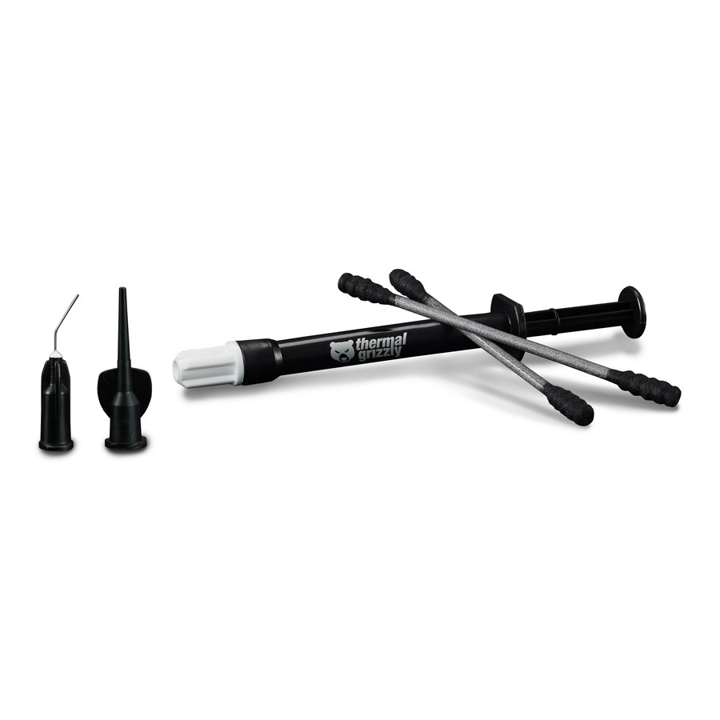
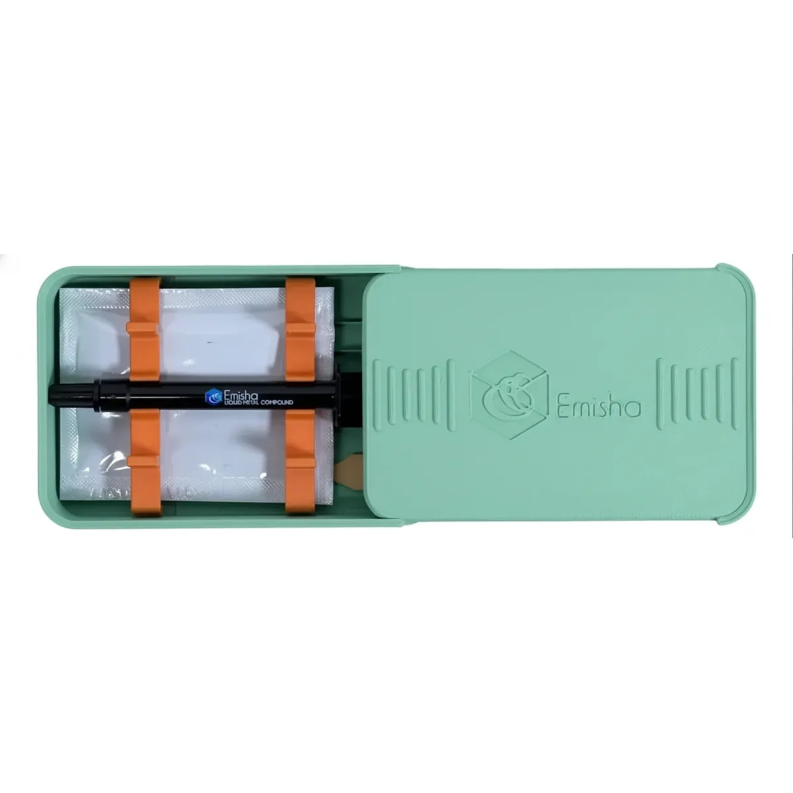

Manual de aplicaciones — la conductividad térmica más alta disponible. Para usuarios con experiencia técnica comprobada.
2 marcas3 líneas de productoProducto eléctricamente conductivo
Sección 01
¿Qué es el metal líquido y por qué es distinto?
El metal líquido es una aleación de galio (Ga, In, Sn) que permanece en estado líquido a temperatura ambiente. Su conductividad térmica es 6 a 8 veces mayor que la mejor pasta convencional, pero es eléctricamente conductivo y requiere aplicación experta.
Aplicación correcta de metal líquido con cinta Kapton
Por qué es la conductividad más alta
Comparativa de conductividad térmica:
Pasta económica: ~5 W/mK
Pasta premium (Kryonaut): ~12.5 W/mK
Pasta extrema (Kryonaut Extreme): ~14.2 W/mK
Metal líquido:~73 a 76 W/mK
Por qué es distinto: el metal líquido es metal real (aleación de galio). Conduce calor como conducen los metales, no como conducen los compuestos cerámicos.
Sección 02
Advertencias críticas antes de usar
El metal líquido no es pasta. Antes de comprarlo o aplicarlo, lee y entiende todas estas advertencias. Una sola gota mal colocada puede dañar permanentemente el equipo.
Lectura obligatoria
El metal líquido es eléctricamente conductivo. Funciona como un puente eléctrico igual que un cable. Si una gota cae sobre la PCB, conecta dos pistas que no deberían conectarse y daña el componente de forma permanente.
Riesgo crítico
Eléctricamente conductivo
Una gota fuera del chip puede crear un cortocircuito que daña permanentemente la motherboard o GPU. Es por esto que se aplica con aplicador de algodón, no con jeringa directa.
Daño irreversible
NO usar con disipadores de aluminio
El galio reacciona químicamente con el aluminio y lo corroe. Solo se usa con disipadores de cobre, niquelado o disipadores con base de cobre certificada.
Sin reversa
Difícil de remover
Una vez aplicado, el metal líquido reacciona con la superficie del IHS. Para removerlo se necesita el removedor TG Remove y aún así puede quedar mancha permanente.
Requiere experiencia
No es para principiantes
La aplicación incorrecta es la causa #1 de muerte de equipos al usar metal líquido. Recomendamos solo a técnicos con experiencia previa en aplicaciones similares.
Protección obligatoria
Cinta Kapton es indispensable
Antes de aplicar, hay que aislar el perímetro del chip con cinta Kapton para que ninguna gota toque la PCB. No es opcional — es parte del proceso correcto.
Mantenimiento
Puede absorberse en el cobre
Con el tiempo, el galio penetra en el cobre del disipador. Hay que verificar y reaplicar cada 1-2 años para mantener rendimiento óptimo.
Sección 03
Cuándo usarlo y cuándo NO usarlo
El metal líquido brilla en escenarios específicos donde cada grado cuenta. Para uso doméstico o gaming casual, una pasta premium rinde mejor por costo-riesgo.
Cuándo SÍ tiene sentido
Delidding (procesador con IHS removido)
Laptop gaming high-end con problemas térmicos crónicos
Configuraciones de overclocking competitivo o benchmarks de récord
Refrigeración líquida custom con bloque de cobre o niquelado
Servicio profesional para clientes que entienden el riesgo
Reducción de hot spot en chips que se calientan por diseño (i9-13/14900K)
Cuándo NO usar
Build casual o gaming entry/medio (sobra rendimiento, falta riesgo)
Disipador de aluminio sin niquelar (corrosión inevitable)
Primera vez aplicando interfaces térmicas
Equipos en garantía (puede invalidarla)
Equipos que se transportan frecuentemente (vibración mueve el metal líquido)
Cuando el cliente no puede asumir el riesgo de daño total
Aplicación al aire libre o sin condiciones controladas (polvo, viento)
Comparativa: cuándo conviene metal líquido vs pasta extrema
Escenario
Mejor opción
Por qué
Gaming casual con CPU mainstream
Pasta convencional (MX-4, Hydronaut)
Sobra rendimiento, pasta es más segura y económica
Overclocking estable de uso diario
Pasta extrema (Kryonaut Extreme)
Excelente rendimiento sin el riesgo del metal líquido
Benchmark competitivo / récord
Metal líquido (Conductonaut Extreme)
Cada grado cuenta, los expertos pueden aplicarlo seguro
i9-13900K con problemas térmicos
Metal líquido (Conductonaut)
El chip corre caliente por diseño, ML reduce 10-15 °C
Laptop gaming con throttling
Metal líquido (con Kapton)
Mejora drástica en chips densos sin opción de cooler mejor
Delidding (IHS removido)
Metal líquido (entre die e IHS)
Es el único que rinde adecuadamente en esa interfaz
Workstation 24/7 sin mantenimiento
Pasta de larga vida (NT-H1, Duronaut)
El ML requiere reaplicación periódica
Sección 04
Cómo aplicar paso a paso
La aplicación de metal líquido toma 30-60 minutos hechos con calma. La preparación es más importante que la aplicación misma.
Lo que necesitas antes de empezar
Metal líquido (Conductonaut, Conductonaut Extreme o Emisha Liquid Ultra)
Aplicadores de algodón (TG-AL-3 — incluidos o por separado)
Cinta Kapton (TG-KIS-10-60-50) para aislar el perímetro
Removedor (TG-AR-100 / TG Remove) — por si necesitas corregir
Toallita con alcohol isopropílico
Buena luz, mesa estable y manos firmes
Un trapo seco para limpiar gotas accidentales
CRÍTICO: trabaja con el equipo apagado y desconectado. Verifica DOS VECES que el disipador es de cobre o niquelado, no de aluminio. Si tienes cualquier duda, NO procedas — usa pasta convencional.
Paso 1 Limpiar y preparar el área
Retira completamente cualquier pasta o metal líquido anterior. Si había metal líquido, usa TG Remove para eliminarlo.
Limpia el IHS del CPU/GPU con toallita húmeda con alcohol isopropílico hasta dejarlo brillante.
Limpia la base del disipador igual.
Espera 1 minuto a que se evapore todo el alcohol.
Paso 2 Aislar el perímetro con cinta Kapton
Corta tiras de cinta Kapton del ancho necesario para cubrir las áreas alrededor del chip.
Pega las tiras formando un marco que rodee TODO el perímetro del IHS — incluyendo capacitores, resistencias y cualquier componente cercano.
Verifica que no quede ningún componente expuesto a 1-2 cm del IHS. La cinta es el seguro contra daños catastróficos.
Presiona la cinta para que esté bien adherida — no debe levantarse al montar el disipador.
Tip: en sockets Intel LGA 1700 o 1851, considera usar un Contact Frame (TG-CF-I1851-V1) — además de mejorar contacto, simplifica la aplicación de Kapton.
Paso 3 Aplicar el metal líquido
Saca una pequeña cantidad de la jeringa — el tamaño de UNA gota muy pequeña, casi un punto.
Toma el aplicador de algodón y absorbe la gota.
Pinta el IHS extendiendo la gota en una capa MUY fina y uniforme. La capa debe verse como un brillo metálico delgado.
Cubre solo la zona del IHS — no toques el perímetro ni las áreas con Kapton.
Repite el proceso con la base del disipador (también cobre/niquelado): aplica una capa muy fina del mismo modo.
Tip: menos es más. Si aplicas demasiado, escurrirá al cerrar el disipador. La capa correcta es prácticamente invisible — solo se ve el reflejo metálico cambiar.
Paso 4 Montar el disipador con extra cuidado
Coloca el disipador alineado con el chip — más cuidado que con pasta normal.
Baja el disipador en línea perfectamente recta. NO deslices ni gires.
Aprieta los tornillos en patrón cruzado, en dos etapas (medio apretar todos, luego apretar definitivo).
No sobreaprietes — la presión normal es suficiente.
Si ves cualquier rastro de metal líquido escurriendo, detente inmediatamente, desmonta y limpia con TG Remove.
Paso 5 Primera prueba con cuidado
Antes de cerrar el gabinete, conecta el equipo y verifica que enciende correctamente.
Si todo está bien, ejecuta una prueba de carga corta (5 minutos): Cinebench R23 o un juego.
Monitorea temperaturas con HWiNFO. Mira específicamente que sean ESTABLES — temperaturas altas y crecientes pueden indicar contacto deficiente.
Compara contra esta tabla:
Tipo de equipo
Idle
Carga máxima esperada
i9-13/14900K con metal líquido
30 a 40 °C
75 a 88 °C (vs 95-100 °C con pasta)
Ryzen 9 con metal líquido
32 a 42 °C
72 a 85 °C
Laptop gaming high-end
40 a 50 °C
78 a 90 °C (vs 95+ °C con pasta de fábrica)
CPU delidded con metal líquido
28 a 38 °C
65 a 80 °C
Sección 05
Tabla maestra — todas las líneas que distribuimos
Tres líneas de metal líquido en distintas presentaciones. Las diferencias son sutiles entre Conductonaut y Conductonaut Extreme; la opción Emisha es alternativa de buen valor.
Marca
Línea
Conductividad
Rendimiento
Uso ideal
Presentaciones
Thermal Grizzly
Conductonaut
~73 W/mK
★★★★★
Estándar de oro del metal líquido — todas las aplicaciones
1 g, 5 g
Thermal Grizzly
Conductonaut Extreme
~76 W/mK
★★★★★
Overclocking competitivo, benchmarks de récord
1 g, 5 g
Emisha
Liquid Ultra
Alta conductividad declarada
★★★★★
Alternativa con mejor relación costo-rendimiento
1 g, 2 g, 5 g, 10 g
Sección 06
Fichas detalladas por línea
Thermal Grizzly Conductonaut
El estándar de oro del metal líquido — referencia mundial
TipoAleación de galio, indio, estaño
Conductividad declarada~73 W/mK
EstadoLíquido a temperatura ambiente
AplicaciónDelidding, overclocking, laptops gaming
Por qué elegirla
Marca alemana de referencia mundial en interfaces térmicas extremas
Conductividad declarada 6 veces mayor que la mejor pasta convencional
Datasheet técnico riguroso con resultados reproducibles
Disponible en presentación de 1 g (suficiente para 8-10 aplicaciones) y 5 g (taller especializado)
Para otros usos considera
Si haces benchmarks competitivos donde cada décima cuenta → Conductonaut Extreme
Si quieres alternativa con mejor relación costo-rendimiento → Emisha Liquid Ultra
Si es uso casual o build mainstream → pasta convencional rinde sin riesgo
Presentaciones disponibles
SKU
Gramaje
Aplicación
TG-C-001-R
1 g
1 a 2 aplicaciones de CPU/GPU
TG-C-005-R
5 g
Taller especializado o varios proyectos
Aplicaciones típicas
Delidding de CPU1 g entre die e IHS
i9 con problemas térmicos1 g + Kapton para reducir 10-15 °C
Laptop gaming high-end1 g para reparación profesional
Taller de overclocking5 g como inventario para varios builds
Procesadores y equipos típicos
Intel: i9-12900K · i9-13900K · i9-14900K (todos corren calientes y se benefician)
AMD: Ryzen 9 7950X (post-delid)
Laptops: ASUS ROG Strix Scar · Lenovo Legion · MSI Raider GE / Stealth
Equipos: overclocking diario, delidding, laptops gaming high-end con throttling, configuraciones de récord
Qué temperatura esperar
Estado
Reducción típica vs pasta premium
i9-13/14900K stock
10 a 15 °C menos
Laptop gaming bajo carga
8 a 18 °C menos
CPU post-delid
15 a 25 °C menos
Mejora aproximada vs Kryonaut: 8 a 12 °C menos en cargas exigentes. Cada grado cuenta cuando el chip está en el límite térmico.

Thermal Grizzly Conductonaut Extreme
La versión reforzada del Conductonaut — para benchmarks y récords
Equipos: benchmarks de récord, eventos de overclocking, reviewers especializados
Qué temperatura esperar
Estado
Diferencia vs Conductonaut
Carga estándar
0 a 1 °C menos
Overclock extremo
1 a 2 °C menos
Sub-zero / LN2
Mejor estabilidad térmica
Mejora aproximada vs Conductonaut estándar: 1 a 2 °C en cargas competitivas. Diferencia más relevante en benchmarks que duran horas.

Emisha Liquid Ultra
Alternativa con excelente relación costo-rendimiento
TipoAleación de galio de alta conductividad
Conductividad declaradaAlta conductividad declarada por fabricante
EstadoLíquido a temperatura ambiente
AplicaciónMismas que Conductonaut con mejor precio
Por qué elegirla
Excelente relación costo-rendimiento vs Thermal Grizzly
Disponible en 4 presentaciones: 1 g, 2 g, 5 g, 10 g — cubre desde DIY hasta taller
La presentación de 10 g es ideal para servicio técnico con flujo regular
Aplicación idéntica a Conductonaut
Para otros usos considera
Si es para benchmark de récord donde cada décima cuenta → Conductonaut Extreme
Si el cliente solicita marca alemana específicamente → Conductonaut
Si haces aplicación profesional para clientes finales → Conductonaut tiene marca más reconocida
Presentaciones disponibles
SKU
Gramaje
Aplicación
E-LM-U-1GR
1 g
1 a 2 aplicaciones individuales
E-LM-U-2GR
2 g
3 a 5 aplicaciones
E-LM-U-5GR
5 g
Taller con flujo regular
E-LM-U-10GR
10 g
Servicio técnico de alto volumen
Aplicaciones típicas
Cliente DIY con experiencia1 g o 2 g para una aplicación
Servicio de delidding5 g para varios servicios
Reparación de laptops gaming2 g como SKU regular
Taller de alto volumen10 g como inventario base
Procesadores y equipos típicos
Intel: i9-12900K · i9-13900K · i9-14900K (mismas aplicaciones que Conductonaut)
AMD: Ryzen 9 high-end con problemas térmicos
Laptops gaming: mismo perfil que Conductonaut
Equipos: servicio técnico con presupuesto medio, taller de alto volumen, clientes que valoran mejor precio
Qué temperatura esperar
Estado
Reducción vs pasta premium
i9 stock
8 a 13 °C menos
Laptop con throttling
7 a 15 °C menos
Post-delid
13 a 22 °C menos
Rendimiento equivalente a Conductonaut con 30-40% menos costo en presentaciones grandes.
Sección 07
Accesorios obligatorios para metal líquido
Estos productos no son opcionales — la aplicación segura del metal líquido los requiere todos.
Producto
SKU
Por qué es obligatorio
TG Aplicadores Metal Líquido (3 piezas)
TG-AL-3
Aplicación con aplicador de algodón evita escurrimientos. NUNCA aplicar metal líquido directo de la jeringa.
TG Kapton Insulation Sheet
TG-KIS-10-60-50
Aísla el perímetro del chip para que ninguna gota toque la PCB. Es el seguro contra cortocircuito.
TG Remove (10 ml)
TG-AR-100
Necesario para limpiar metal líquido si hay error o para reaplicación futura. No se puede limpiar con alcohol convencional.
TG Espátulas (3 piezas)
TG-AS-3
Útiles para extender pequeñas cantidades en die desnudo (delidding).
TG CPU Contact Frame Intel 1851 V1
TG-CF-I1851-V1
Marco que mejora el contacto del IHS y simplifica aplicación de Kapton en sockets Intel 1851 modernos. Recomendado para builds nuevos.
Recomendación de venta: nunca vender metal líquido sin asegurar que el cliente tiene aplicadores y cinta Kapton. Si no los pide, ofrécelos — un cliente que daña su equipo por aplicación incorrecta no volverá a comprarte.
Sección 08
Errores graves que deben evitarse
Estos errores no son cosméticos — destruyen equipos. Léelos atentamente antes de aplicar.
Error grave 01
Aplicar sin cinta Kapton alrededor del chip Riesgo de daño total. Cualquier gota fuera del IHS toca la PCB y puede crear cortocircuito permanente. La cinta Kapton no es opcional.
Error grave 02
Usar sobre disipador de aluminio Daño irreversible al cooler. El galio reacciona con el aluminio y lo corroe. Solo cobre o niquelado son compatibles.
Error grave 03
Aplicar demasiada cantidad Garantía de escurrimiento. El metal líquido no se distribuye como pasta — el exceso escurre. Se aplica en capa muy fina.
Error grave 04
Aplicar directo de la jeringa Sin control. La jeringa libera demasiado material. Siempre usar aplicador de algodón para controlar la cantidad.
Error grave 05
Mover el disipador después de bajar Descontrol de gotas. Cualquier movimiento lateral después del contacto puede empujar metal líquido fuera del IHS.
Error grave 06
Mezclar con pasta convencional Reacción incompatible. El galio reacciona con compuestos de pasta convencional. Limpia completamente cualquier pasta antes de aplicar metal líquido.
Error grave 07
Olvidar revisar después de 1-2 años El galio se absorbe. Con el tiempo, el galio penetra en el cobre del disipador. Programa revisión y reaplicación.
Error grave 08
Aplicarlo en equipo en garantía Invalida garantía. El residuo del metal líquido es detectable. La mayoría de fabricantes lo consideran modificación no autorizada.
¿Listo para cotizar o comprar?
Para precios actualizados, disponibilidad y todas las presentaciones, consulta nuestro catálogo digital. Si necesitas asesoría técnica para tu caso específico, escríbenos directamente.